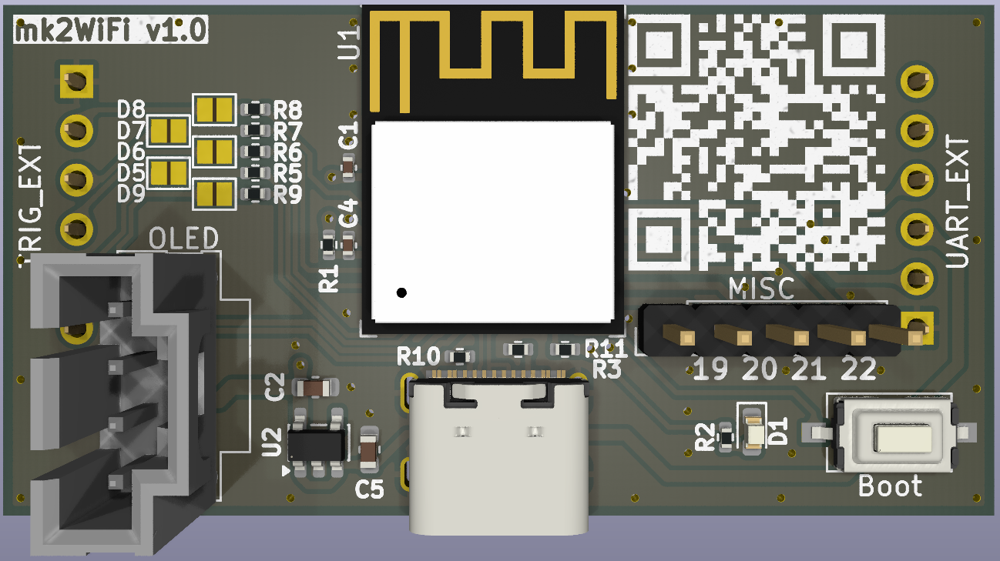
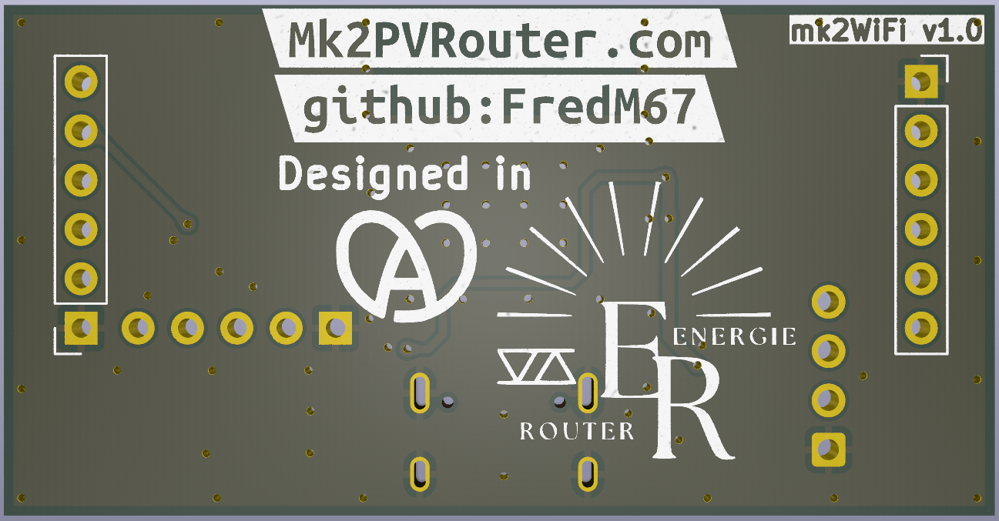
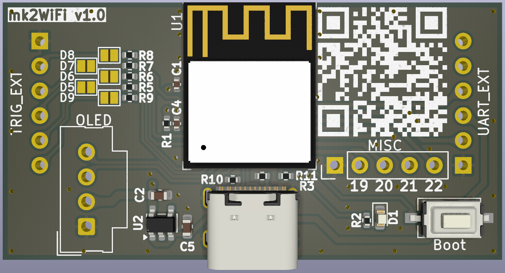
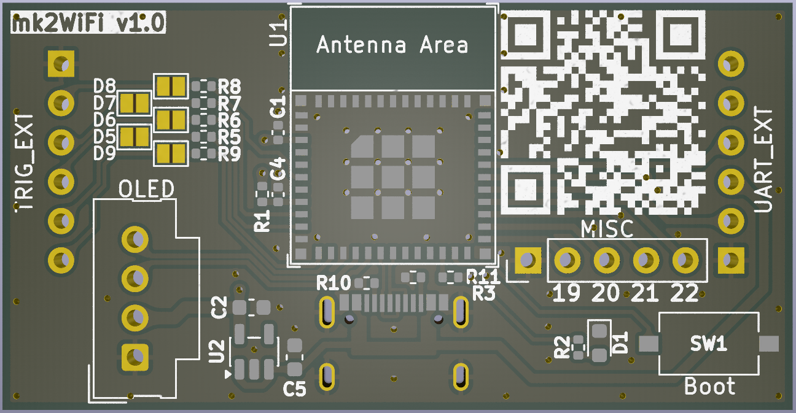

Module mk2Wifi
⏱️ Temps de lecture : 5–10 minutes
Vue d’ensemble
Le module mk2Wifi est un module d’extension qui ajoute une connectivité sans fil au Mk2 PV Router. Il est basé sur un module ESP32-C6-MINI-1 (ESP32-C6, RISC-V simple cœur) et offre :
WiFi 6 802.11 b/g/n/ax (2,4 GHz)
Bluetooth LE 5
Zigbee et Thread (802.15.4)
Connecteur USB-C pour le chargement initial du firmware (mises à jour suivantes via OTA)
Écran OLED optionnel via I2C (connecteur Molex SL)
Cinq lignes de commande (D5–D9) qui pilotent des entrées du routeur (voir Cavaliers de soudure (D5–D9))
Quatre GPIO supplémentaires (GPIO19–GPIO22) sur un connecteur MISC
Passthrough du capteur de température 1-Wire DS18B20
Liaison série UART avec la carte principale
Le module se branche directement sur la carte principale via les connecteurs TRIG_EXT et UART_EXT, et est alimenté en +5 V par celle-ci.
Bien que le module puisse être programmé avec n’importe quel firmware compatible ESP32-C6 (Arduino, ESP-IDF…), il est principalement conçu pour fonctionner avec ESPHome, permettant une intégration directe avec Home Assistant.
Note
Les composants CMS du module mk2Wifi sont assemblés en usine. Seules les deux barrettes femelles TRIG_EXT et UART_EXT doivent être soudées par l’utilisateur pour relier le module à la carte-mère. Les connecteurs OLED et MISC sont eux aussi traversants (absents de la vue « Composants CMS uniquement » ci-dessous) : ils ne servent que si vous branchez un écran ou utilisez les GPIO supplémentaires, et sont fournis selon votre commande.
Images de la carte
Face avant (assemblée) |
Face arrière |
|---|---|
 |
 |
Composants CMS uniquement |
Circuit imprimé nu |
|---|---|
 |
 |
Connecteurs
Réf |
Boîtier |
Description |
|---|---|---|
TRIG_EXT |
Barrette femelle 1×06 2,54 mm |
Connecteur déclenchement/GPIO (s’enfiche sur la carte principale) |
UART_EXT |
Barrette femelle 1×06 2,54 mm |
Connecteur UART + DS18B20 (s’enfiche sur la carte principale) |
OLED |
Molex SL 1×04 2,54 mm |
Connecteur écran OLED I2C |
USB-C |
CSP-USC16-TR |
Connecteur USB Type-C (programmation initiale) |
MISC |
Barrette mâle 1×05 2,54 mm |
GPIO supplémentaires (GPIO19–GPIO22) |
Connecteur MISC
Broche |
Signal |
|---|---|
1 |
GND |
2 |
GPIO19 |
3 |
GPIO20 |
4 |
GPIO21 |
5 |
GPIO22 |
Ces 4 GPIO sont directement connectés à l’ESP32-C6 sans résistance série. Ils peuvent être utilisés pour des capteurs, E/S ou interfaces de communication supplémentaires.
Avertissement
Ces broches acceptent 3,3 V au maximum : n’y appliquez jamais 5 V.
Cavaliers de soudure (D5–D9)
Le module mk2Wifi dispose de 5 cavaliers de soudure qui permettent de déconnecter individuellement chaque signal GPIO entre le module et la carte principale. Par défaut, les cavaliers sont ouverts (signaux déconnectés).
Cavalier |
Repère PCB |
Liaison (via une résistance série de 1 kΩ) |
|---|---|---|
D5 |
JP4 |
GPIO0 de l’ESP32-C6 ↔ D5 du routeur (TRIG_EXT broche 5) |
D6 |
JP3 |
GPIO5 de l’ESP32-C6 ↔ D6 du routeur (TRIG_EXT broche 4) |
D7 |
JP2 |
GPIO4 de l’ESP32-C6 ↔ D7 du routeur (TRIG_EXT broche 3) |
D8 |
JP1 |
GPIO3 de l’ESP32-C6 ↔ D8 du routeur (TRIG_EXT broche 2) |
D9 |
JP5 |
GPIO1 de l’ESP32-C6 ↔ D9 du routeur (TRIG_EXT broche 6) |
La sérigraphie indique D5 à D9 à côté de chaque cavalier ; les repères JP1 à JP5 du schéma et de la nomenclature ne suivent pas l’ordre des signaux.
Côté routeur, ces lignes arrivent sur des entrées de commande (actives à l’état bas, avec résistance de rappel) : arrêt du routage, arrêt du routeur, marche forcée, signal heures creuses, rotation des priorités. Le YAML généré par le configurateur les pilote en drain ouvert : le module ne fait que tirer la ligne à l’état bas, ou la relâcher. Pour qu’une ligne arrive au routeur, le cavalier correspondant doit être fermé (goutte de soudure entre les deux pastilles).
Astuce
Ne fermez que les cavaliers listés par le configurateur (en tête du YAML : Solder jumpers to close). Ne fermez jamais le cavalier d’une broche que le routeur utilise comme sortie (charge, relais, LED) : le module et le routeur piloteraient la même ligne. Avec le config.h d’origine, les charges sont sur D5, D6 et D7 en triphasé et sur D5 en monophasé.
Alimentation
En fonctionnement normal, le +5 V est fourni par la carte principale via le connecteur UART_EXT (broche 3). Le régulateur LDO AP2112K-3.3 (U2) convertit cette tension en +3,3 V pour l’ESP32-C6 et l’écran OLED, avec un courant maximal de 600 mA.
Le connecteur USB-C peut également fournir du +5 V lors de la programmation initiale, lorsque la carte n’est pas connectée à la carte principale.
Avertissement
Ne pas connecter l’USB-C lorsque le module mk2Wifi est branché sur la carte principale.
Les deux alimentations +5 V (USB et carte principale) ne sont pas isolées et les connecter simultanément peut endommager la carte ou l’hôte USB.
La LED témoin D1 est allumée en permanence lorsque le +3,3 V est présent.
Intégration avec la carte principale
Le module mk2Wifi se branche sur les connecteurs TRIG_EXT et UART_EXT de la carte principale :
La carte principale porte des barrettes mâles, le module mk2Wifi des barrettes femelles
L’alimentation +5 V est fournie par la carte principale via UART_EXT broche 3
L’UART (TX/RX) assure la communication série avec l’ATmega328P
Le signal DS18B20 est acheminé pour la mesure de température 1-Wire
Les lignes D5–D9 pilotent des entrées de commande du routeur (cavalier fermé uniquement)
Le bus I2C (SDA = GPIO6, SCL = GPIO7) est local au module mk2Wifi uniquement — il relie l’ESP32-C6 à l’écran OLED et n’est pas routé vers la carte principale. Le YAML du configurateur déclare ce bus mais pas l’écran : le composant
displayest à ajouter vous-même
Note
La gestion du capteur DS18B20 est sélectionnée par le cavalier TEMP sur la carte principale (voir Configuration des cavaliers). En position 3–centre, c’est l’ESP32-C6 du mk2Wifi qui gère le capteur.